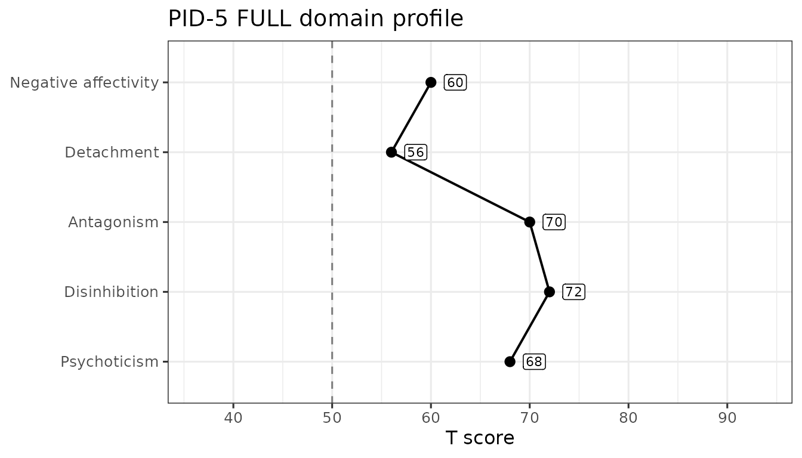
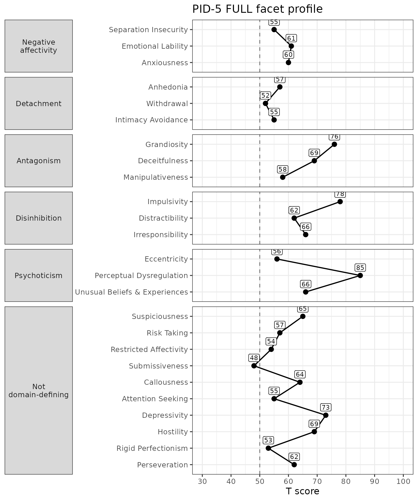
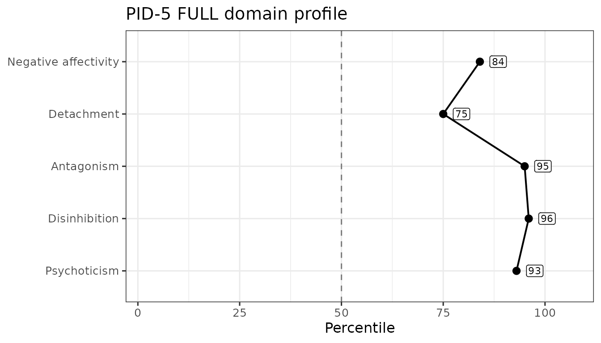

The Personality Inventory for DSM-5 (PID-5) instrument has 220 items and yields 25 facet scales, 5 domain scales, and 5 validity scales. We can demonstrate the package’s functionality using some simulated data.
First, we load the package into memory using the
library() function. If this doesn’t work, make sure you
installed the package properly (see the README on GitHub).
Score simulated PID-5 data
The sim_pid5 dataset is built into the package and can
be loaded using the data() function. It contains 100 rows
(each representing a simulated participant) and 220 columns named
pid_1 to pid_220 (each representing an item
from the PID-5).
data("sim_pid5")
sim_pid5
#> # A tibble: 100 × 220
#> pid_1 pid_2 pid_3 pid_4 pid_5 pid_6 pid_7 pid_8 pid_9 pid_10 pid_11 pid_12
#> <int> <int> <int> <int> <int> <int> <int> <int> <int> <int> <int> <int>
#> 1 0 3 2 1 1 3 1 3 3 0 0 3
#> 2 3 3 0 3 0 3 2 2 1 2 0 0
#> 3 3 2 3 2 3 3 0 3 3 2 3 3
#> 4 1 3 0 2 1 0 2 0 3 2 3 2
#> 5 0 1 3 2 3 1 0 1 2 2 2 2
#> 6 2 1 1 3 3 2 2 0 1 3 1 3
#> 7 1 1 3 3 1 3 1 0 1 1 0 2
#> 8 2 0 3 0 3 2 0 1 3 1 2 0
#> 9 1 1 3 0 1 1 2 3 1 1 3 1
#> 10 0 3 2 3 3 0 1 2 1 3 0 2
#> # ℹ 90 more rows
#> # ℹ 208 more variables: pid_13 <int>, pid_14 <int>, pid_15 <int>, pid_16 <int>,
#> # pid_17 <int>, pid_18 <int>, pid_19 <int>, pid_20 <int>, pid_21 <int>,
#> # pid_22 <int>, pid_23 <int>, pid_24 <int>, pid_25 <int>, pid_26 <int>,
#> # pid_27 <int>, pid_28 <int>, pid_29 <int>, pid_30 <int>, pid_31 <int>,
#> # pid_32 <int>, pid_33 <int>, pid_34 <int>, pid_35 <int>, pid_36 <int>,
#> # pid_37 <int>, pid_38 <int>, pid_39 <int>, pid_40 <int>, pid_41 <int>, …To turn these item-level data into scale scores on the 25 facets and
5 domains, we can use the score_pid5() function. We will
need to tell the function which columns contain our items and which
version of the PID this is. There are several ways we can specify the
items. First, we can provide the column numbers and use the
: shortcut. In this tibble, the items are from column 1 to
column 220 so we can use items = 1:220. I am going to also
set append = FALSE so that you can quickly see the scale
scores. I also can set the version to "FULL" (or leave that
argument off, as that is the default, shown in the example below) to let
it know we are using the full 220-item version.
scores <- score_pid5(sim_pid5, items = 1:220, version = "FULL", append = FALSE)
scores
#> # A tibble: 100 × 30
#> pid_anhedonia pid_suspiciousness pid_riskTaking pid_impulsivity
#> <dbl> <dbl> <dbl> <dbl>
#> 1 1.25 1.71 1.36 2.33
#> 2 1.38 1.57 1.43 2
#> 3 1.88 1 1.29 1.83
#> 4 1.25 2.43 1.21 1.5
#> 5 1.12 1.57 1.64 2.5
#> 6 2.12 1 1.79 1.83
#> 7 1.38 1.14 1.86 1.17
#> 8 1.5 1.71 1.86 0.667
#> 9 1.12 1.14 1.86 1.67
#> 10 1.38 1.86 2.07 2
#> # ℹ 90 more rows
#> # ℹ 26 more variables: pid_eccentricity <dbl>, pid_distractibility <dbl>,
#> # pid_restrictedAffectivity <dbl>, pid_submissiveness <dbl>,
#> # pid_withdrawal <dbl>, pid_callousness <dbl>,
#> # pid_separationInsecurity <dbl>, pid_attentionSeeking <dbl>,
#> # pid_emotionalLability <dbl>, pid_depressivity <dbl>, pid_hostility <dbl>,
#> # pid_irresponsibility <dbl>, pid_rigidPerfectionism <dbl>, …If I had instead set append = TRUE (or left it off, as
that is the default), we would get back the sim_pid5 tibble
with the scale scores added to the end as extra columns. Notice below
how we now have 250 columns instead of 220 or 30.
scores <- score_pid5(sim_pid5, items = 1:220)
scores
#> # A tibble: 100 × 250
#> pid_1 pid_2 pid_3 pid_4 pid_5 pid_6 pid_7 pid_8 pid_9 pid_10 pid_11 pid_12
#> <int> <int> <int> <int> <int> <int> <int> <int> <int> <int> <int> <int>
#> 1 0 3 2 1 1 3 1 3 3 0 0 3
#> 2 3 3 0 3 0 3 2 2 1 2 0 0
#> 3 3 2 3 2 3 3 0 3 3 2 3 3
#> 4 1 3 0 2 1 0 2 0 3 2 3 2
#> 5 0 1 3 2 3 1 0 1 2 2 2 2
#> 6 2 1 1 3 3 2 2 0 1 3 1 3
#> 7 1 1 3 3 1 3 1 0 1 1 0 2
#> 8 2 0 3 0 3 2 0 1 3 1 2 0
#> 9 1 1 3 0 1 1 2 3 1 1 3 1
#> 10 0 3 2 3 3 0 1 2 1 3 0 2
#> # ℹ 90 more rows
#> # ℹ 238 more variables: pid_13 <int>, pid_14 <int>, pid_15 <int>, pid_16 <int>,
#> # pid_17 <int>, pid_18 <int>, pid_19 <int>, pid_20 <int>, pid_21 <int>,
#> # pid_22 <int>, pid_23 <int>, pid_24 <int>, pid_25 <int>, pid_26 <int>,
#> # pid_27 <int>, pid_28 <int>, pid_29 <int>, pid_30 <int>, pid_31 <int>,
#> # pid_32 <int>, pid_33 <int>, pid_34 <int>, pid_35 <int>, pid_36 <int>,
#> # pid_37 <int>, pid_38 <int>, pid_39 <int>, pid_40 <int>, pid_41 <int>, …Alternatively, we could provide the item column names as a character
string. Typing out all 220 item names would be a hassle, but luckily
this data named them consistently so we can build the names
automatically using sprintf(). If we use the “pid_%d”
format and apply that across the numbers 1 to 220, that will create the
column names we need.
scores <- score_pid5(sim_pid5, items = sprintf("pid_%d", 1:220))
scores
#> # A tibble: 100 × 250
#> pid_1 pid_2 pid_3 pid_4 pid_5 pid_6 pid_7 pid_8 pid_9 pid_10 pid_11 pid_12
#> <int> <int> <int> <int> <int> <int> <int> <int> <int> <int> <int> <int>
#> 1 0 3 2 1 1 3 1 3 3 0 0 3
#> 2 3 3 0 3 0 3 2 2 1 2 0 0
#> 3 3 2 3 2 3 3 0 3 3 2 3 3
#> 4 1 3 0 2 1 0 2 0 3 2 3 2
#> 5 0 1 3 2 3 1 0 1 2 2 2 2
#> 6 2 1 1 3 3 2 2 0 1 3 1 3
#> 7 1 1 3 3 1 3 1 0 1 1 0 2
#> 8 2 0 3 0 3 2 0 1 3 1 2 0
#> 9 1 1 3 0 1 1 2 3 1 1 3 1
#> 10 0 3 2 3 3 0 1 2 1 3 0 2
#> # ℹ 90 more rows
#> # ℹ 238 more variables: pid_13 <int>, pid_14 <int>, pid_15 <int>, pid_16 <int>,
#> # pid_17 <int>, pid_18 <int>, pid_19 <int>, pid_20 <int>, pid_21 <int>,
#> # pid_22 <int>, pid_23 <int>, pid_24 <int>, pid_25 <int>, pid_26 <int>,
#> # pid_27 <int>, pid_28 <int>, pid_29 <int>, pid_30 <int>, pid_31 <int>,
#> # pid_32 <int>, pid_33 <int>, pid_34 <int>, pid_35 <int>, pid_36 <int>,
#> # pid_37 <int>, pid_38 <int>, pid_39 <int>, pid_40 <int>, pid_41 <int>, …There are other useful arguments to the function that you can read
about using its documentation by typing the following into your R
console: ?score_pid5 or through the package
website.
Rank Each Person’s Highest Facets
Thirty scale columns is more than can be read at a glance. The
rank_scales() function condenses them: for each row it
sorts the columns you select and returns a single string naming the
highest-scoring ones, highest first. Here we rank the 25 facet scales —
the first 25 columns of the scored tibble, the last 5 being the domains
those facets roll up into — and ask for each participant’s top 5.
Setting prefix = "pid_" strips that leading string from the
column names, so the string reads as scale names.
facet_scores <- score_pid5(sim_pid5, items = 1:220, append = FALSE)
rank_scales(facet_scores, scales = 1:25, prefix = "pid_", top = 5, append = FALSE)
#> # A tibble: 100 × 1
#> top_scales
#> <chr>
#> 1 impulsivity,grandiosity,hostility,perceptualDysregulation,suspiciousness
#> 2 distractibility,rigidPerfectionism,impulsivity,attentionSeeking,withdrawal
#> 3 submissiveness,depressivity,anhedonia,eccentricity,impulsivity
#> 4 suspiciousness,withdrawal,hostility,intimacyAvoidance,callousness
#> 5 impulsivity,attentionSeeking,perseveration,perceptualDysregulation,distracti…
#> 6 distractibility,eccentricity,deceitfulness,separationInsecurity,anhedonia
#> 7 rigidPerfectionism,distractibility,riskTaking,grandiosity,perseveration
#> 8 unusualBeliefsExperiences,manipulativeness,intimacyAvoidance,attentionSeekin…
#> 9 rigidPerfectionism,depressivity,irresponsibility,perseveration,distractibili…
#> 10 intimacyAvoidance,riskTaking,impulsivity,distractibility,suspiciousness
#> # ℹ 90 more rowsThe top_scales column holds one comma-separated string
per participant: the names of their five highest-scoring facets, in
descending order. Ties are broken by the order of the columns you
selected. We passed append = FALSE so that the ranked
column comes back on its own; leaving that argument at its default
returns the scored tibble with the column added to the end instead. Use
name to call the output column something else and
dir = "low" to rank from the bottom.
Scale Reliability
As we compute scale scores, we can also estimate their inter-item reliability using Cronbach’s α (alpha) or McDonald’s ω (omega total). α is fast and widely used, but it assumes tau-equivalence (all items load equally on a single factor); violations can make α under- or over-estimate reliability. ω is based on a congeneric single-factor model, allowing items to have different loadings and error variances; it typically provides a more accurate reliability estimate for unit-weighted sums. Both assume the scale is essentially unidimensional; α and ω coincide when tau-equivalence holds.
We estimate reliability with the reliability_pid5()
function, which returns a tibble with one row per scale and columns for
the number of items and the requested coefficients. By default it
computes both alpha and omega; for the latter,
we will need the lavaan package installed (set
omega = FALSE to skip it). Note that, because this is
naively simulated data, we would expect the reliability in this example
to be poor.
reliability_pid5(
data = sim_pid5,
items = sprintf("pid_%d", 1:220),
version = "FULL"
)
#> # A tibble: 25 × 4
#> Scale nItems alpha omega
#> <chr> <int> <dbl> <dbl>
#> 1 Anhedonia 8 -0.211 NA
#> 2 Suspiciousness 7 -0.211 0.0411
#> 3 Risk Taking 14 -0.0128 0.00697
#> 4 Impulsivity 6 0.141 NA
#> 5 Eccentricity 13 0.0554 0.152
#> 6 Distractibility 9 -0.154 0.00807
#> 7 Restricted Affectivity 7 -0.144 NA
#> 8 Submissiveness 4 -0.194 0.116
#> 9 Withdrawal 10 -0.0290 NA
#> 10 Callousness 14 0.0147 0.0279
#> # ℹ 15 more rowsValidity Scales for the PID-5
There are also several validity scales that have been developed for
the full PID-5, including measures of overreporting, inconsistent
responding, and positive impression management. We can use the simulated
data to demonstrate the ability of the validity_pid5()
function to calculate these scores and flag issues. The function
arguments will be consistent with what we just learned. Note that,
because the data is fake, we would expect there to be lots of validity
issues.
validity_pid5(sim_pid5, items = 1:220, append = FALSE)
#> ! A total of 99 observations (99.0%) met criteria for inconsistent responding on the INC (0 missing).
#> ℹ Consider removing them with `dplyr::filter(df, pid_INC < 17)`
#> ! A total of 53 observations (53.0%) met criteria for overreporting on the ORS (0 missing).
#> ℹ Consider removing them with `dplyr::filter(df, pid_ORS < 3)`
#> ! A total of 92 observations (92.0%) met criteria for defensiveness on the SDTD (0 missing).
#> ℹ Consider removing them with `dplyr::filter(df, pid_SDTD < 19)`
#> # A tibble: 100 × 5
#> pid_PNA pid_INC pid_ORS pid_PRD pid_SDTD
#> <dbl> <dbl> <dbl> <dbl> <dbl>
#> 1 0 25 2 40 26
#> 2 0 18 2 34 31
#> 3 0 32 2 34 29
#> 4 0 29 3 34 31
#> 5 0 24 0 36 17
#> 6 0 23 2 35 36
#> 7 0 42 2 31 19
#> 8 0 17 1 28 21
#> 9 0 25 4 41 24
#> 10 0 30 5 31 29
#> # ℹ 90 more rowsNormative Scores
The pid_norms dataset carries the normative score
distributions published by Markon et al. (2024). The
norm_pid5() function looks scored columns up in those
tables and returns, for each one, the T score and percentile printed
against the nearest tabled raw score. It converts scores rather than
computing them, so we hand it the output of score_pid5() —
and of validity_pid5(), if we want those scales converted
too.
scored <- score_pid5(sim_pid5, items = 1:220)
scored <- validity_pid5(scored, items = 1:220)For the full form the published tables cover the five domain scales,
all 25 facet scales, and three of the validity scales — INC, ORS, and
PRD. They do not cover SD-TD at all. Each converted scale gains a
_ptl column, and those whose tables print T scores also
gain a _t column. The validity scales are distributed as
percentiles only, so they get no _t column.
norm_pid5(
scored,
scores = paste0(
"pid_",
c("negativeAffectivity", "detachment", "antagonism", "disinhibition",
"psychoticism", "INC", "ORS", "PRD")
),
version = "FULL",
append = FALSE
)
#> Warning: ! 0 observations below and 63 above the printed range were capped to the
#> nearest printed row.
#> ℹ A capped score's T and percentile are the end row's printed values, not an
#> extrapolation.
#> # A tibble: 100 × 13
#> pid_negativeAffectivity_t pid_negativeAffectivity_ptl pid_detachment_t
#> <int> <dbl> <int>
#> 1 60 0.84 56
#> 2 54 0.71 59
#> 3 58 0.81 68
#> 4 59 0.82 67
#> 5 57 0.79 63
#> 6 64 0.89 66
#> 7 61 0.85 59
#> 8 58 0.81 65
#> 9 62 0.87 59
#> 10 57 0.79 70
#> # ℹ 90 more rows
#> # ℹ 10 more variables: pid_detachment_ptl <dbl>, pid_antagonism_t <int>,
#> # pid_antagonism_ptl <dbl>, pid_disinhibition_t <int>,
#> # pid_disinhibition_ptl <dbl>, pid_psychoticism_t <int>,
#> # pid_psychoticism_ptl <dbl>, pid_INC_ptl <dbl>, pid_ORS_ptl <dbl>,
#> # pid_PRD_ptl <dbl>The facets convert the same way. Anhedonia, for instance, is an item mean over its eight full-form items, and its table runs from a floor of 0.00 up to a printed 3.84 — past the 3.00 an item mean can actually reach, which is true of most of the facet columns and is a property of the published tables rather than of the conversion:
norm_pid5(scored, scores = "pid_anhedonia", version = "FULL", append = FALSE)
#> # A tibble: 100 × 2
#> pid_anhedonia_t pid_anhedonia_ptl
#> <int> <dbl>
#> 1 57 0.79
#> 2 59 0.8
#> 3 67 0.93
#> 4 57 0.79
#> 5 55 0.76
#> 6 71 0.95
#> 7 59 0.8
#> 8 61 0.84
#> 9 55 0.76
#> 10 59 0.8
#> # ℹ 90 more rowsEvery number returned is a cell of a published table: the nearest
printed row is selected and nothing is interpolated. A score that falls
outside a printed range is capped to the nearest end rather than
extrapolated, and a warning reports how many observations that happened
to — the PRD sum reaches 66 while its table stops at 55, so
it is a common one to see. A scale the tables do not cover returns
NA in both columns with a warning naming it. Every report
this function makes is a warning, so a single
suppressWarnings() call silences it.
If the items were answered on a four-option response scale that
starts somewhere other than 0 — 1 to 4, say — pass that range as
srange and each score is reconciled to the published 0–3
metric before it is looked up, with a warning naming which scales were
adjusted and which were left alone. The per-scale formulas are given in
?norm_pid5.
Profile Plots
Once a respondent’s scores are normed, plot_pid5() draws
them as a profile against the published metric. It takes one respondent
— a profile plot shows one person — so we norm the whole dataset and
hand it a single row.
domains <- paste0(
"pid_",
c("negativeAffectivity", "detachment", "antagonism", "disinhibition",
"psychoticism")
)
normed <- norm_pid5(scored, scores = domains, version = "FULL")
plot_pid5(normed[1, ], version = "FULL")
The dashed line marks T = 50, the normative sample’s mean, and the score axis spans the range the published tables actually print for these scales — so the axis does not rescale from respondent to respondent and two profiles are directly comparable. Nothing on the plot says whether a score is high, low, or concerning: {hitop} presents scores against norms and leaves the interpreting to you.
Passing level = "facet" plots all 25 facets instead,
grouped into a panel per domain. The APA key ties three facets to each
domain; the remaining ten define no domain and are grouped separately
rather than dropped.
facets <- paste0("pid_", pid_scales[["FULL"]]$camelCase)
normed_facets <- norm_pid5(scored, scores = facets, version = "FULL")
plot_pid5(normed_facets[1, ], version = "FULL", level = "facet")
Set metric = "percentile" for a percentile axis instead
of T scores. norm_pid5() returns percentiles as a
proportion; the plot multiplies them by 100 so the axis reads 0–100.
plot_pid5(normed[1, ], version = "FULL", metric = "percentile")
The result is an ordinary ggplot object, so you can restyle it with
any ggplot2 layer — + ggplot2::labs(title = ...), a
different theme, and so on.